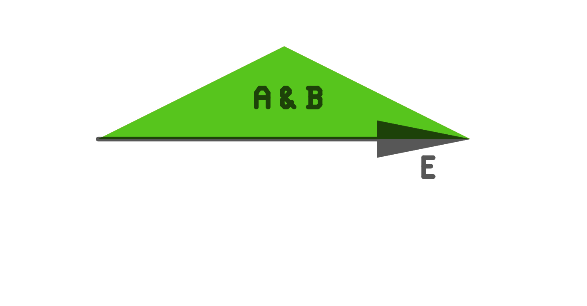

The excellent paper by Michael V. Leonov and Alexey G. Nikitin at the A. P. Ershov Institute of Information Systems, Siberian Branch of Russian back from the 1990s clearly and precisely presents a surprisingly simple algorithm for the problem also called polygon clipping. Besides describing the algorithm, the paper also gives accurate definitions and an estimation on runtime.
While the paper, in its original form, is already rather useful, I've found that as a coder, I have a hard time processing some parts of it, because of the following factors:
This document is an English-to-English translation of the original paper, with the intended target audience being coders who want to understand and implement the algorithm but do not wish to prove or verify the maths behind it. In fact, this document is more of my personal interpretation than a translation.
This document closely follows the structure of the original document, so that the two can be read in parallel.
I heavily simplified or even skipped parts that are very important for mathematical correctness but not required for implementing the algorithm in code. Instead of the mathematical notations, beyond the most basic operators I use a named operator function; instead of single letter variables, I use multiple-letter ASCII-only variable names (no greek letters). Instead of condensing the formulas, I rather make them more verbose, explaining what each variable is for. These modifications may degrade pedantic mathematical correctness, but I believe it makes it easier to digest the information on first pass.
I've also redrawn all illustrations so that they have more labels, more colors; more information explicitly encoded in them that otherwise could have been implied or figured from context.
When an algorithm is specified in pseudo-code or as expressions in tables, the original paper uses a Pascal-like syntax mxed with non-ASCII math notations, this paper uses an ASCII-only C-like syntax.
Finally, this document is plain, hand written html, which is much more portable than pdf.
See the original paper.
See the original paper.
The basic concept of the algorithm is simple: insert a new vertex (corner) in the contour of polygons ('A' and 'B') where they intersect (marked as p1 and p2 on Figure 1). Then split up the polyline of 'A' into contour sections between intersection points, name these contour sections CA1, CA2. Do the same on 'B', resulting contour sections are called CB1 and CB2.
With this the problem is converted from geometry to topology. A few simple properties can be defined, such as whether points left of a contour section are within 'A' or 'B'. A contour section is "boring", since it does not have any intersection thus properties can not change. All the algorithm needs to do is figuring which contour sections to include in the result (and whether to reverse their direction so the result is a continous loop of polyline). For example an union operator will keep CA1 and CB1, an intersection will keep CA2 and CB2 and an "A-B" will keep CA1 and CB2 (with reversed direction).
Our coordinate system is a 2d Euclidian plane with the usual Cartesian system. A point is specified by its x;y coordinates, but points are not stored, only used as a reference for this document. A vertex is also specified by its x;y coordinates and is stored in polylines which are stored in [polygon] regions in turn.
(Definition 1 and 2)
A [polygon] region consists of zero or more islands. (The original paper calls this polygon; this document will call it an island to reduce confusion with similar terms.) An island is an outer polyline and zero or more inner polylines (which act as cutouts). A polyline is an ordererd, cyclic list of vertices, containing at least 3 vertices.
A contour is a section of a polyline that contains 1 or more edges. (Unlike in the original paper, this document never uses contour as a synonym a whole polyline but only to reference a section of the polyline between two intersections. In the corner case when the polyline has no intersection, the contour is the whole polyline.)
An edge is a straight line segment1 that starts from such a vertex and ends at the next vertex; an edge is referenced by its starting vertex. This also means edges are directed from start vertex to end vertex. There are no zero-legth edges.
Given such a directed edge, there is a left neighborhood and a right neighborhood (of imaginary points) next to the edge. (This concept is used only to decide if something is left or right to the edge.)
The straight ordering of vertices or edges within a polyline is counter-clockwise (CCW), the reverse ordering is clockwise (CW).
A high degree vertex is shared by the endpoints of more than two edges.
(Definition 3)
Given a polyline, there's an inner neighborhood (all points inside the polyline) and an outer neighborhood (all points outside). A valid polyline can be self touching (a vertex between two edges falling on a 3rd edge of the polyline) but can not be self intersecting.
The outline of an island is always straight (CCW) while cutouts are always reversed (CW). Each island has exactly one outline, and that is the outmost polyline of the island. Polylines of an island do not touch or intersect other polylines within the island.
Naming convention: this document will name vertices as V or Vsomething, edges as E or Esomething, and index them starting from 0 from an arbitrarily chosen vertex on the polyline, so that (for example) Efoo[5] is the edge that starts at Vfoo[0] and ends at Vfoo[1]. The last edge of a polyline of n vertices, E[n-1] is between V[n-1] and V[0]. Polylines are named Psomething; when indexed, Pfoo[0] is the outline, indices starting from 1 refer to cutouts.
A sector is an imaginary area, a neighborhood of points between two adjacent edges of a polyline. It is roughly the points within the triangle formed by the two edges and a third, virtual line connecting their non-incident ends. (Sectors are not calculated but are used in the explanation and in conceptual relations between edges and polylines.)
Input:
The algorithm is split into four steps:
Find all intersections between edge objects of A and B (ignoring the shared endpoint of adjacent edges within a polyline but not ignoring other intersections happening between edges of the same polyline):
Figuer 5 shows the result. Vertices inserted for intersections are marked with bold. Input regions A and B are arranged so that the circled vertex (a5, B2, B9), marked with y in the result, is a common point. Note: a5 is on an inner (cutout) polyline in A, while B consists of a single outer polyline in which B2 and B9 happens to be on the same point in space (self touching polyline).
By now any intersection has an explicit vertex on all related polylines. If there are multiple vertices falling on the same point, that means there is an intersection/touching there and all vertices on that point are called cross-vertices.
Comment: for each such point of intersection there are at least two cross-vertices for such a point.
Comment: this process does change the structure of input regions, when it is creating new vertices, which means if the original regions are to be preserved, a copy needs to be made. However, this process (in theory3, 4) does not change the shape/meaning/topology of the input regions.)
Take each cross-vertex V[i], where i is the index of the given vertex within the polyline. There will be a previous edge Ep that ends on that vertex and a next edge En that starts at that vertex. Allocate two cross-vertex descriptors (CVD), Dp and Dn, and assign them to Ep and En respectively (cross-linking the corresponding E and D with pointers in both directions). A CVD contains angle5 information and flags.
For every intersection point, collecd all CVDs into a cyclic list called the connectivity list [of that point]. The connectivity list is ordered by the angle of the CVDs (fig. 6). Order of equal angles is unspecified.
Comment: for a geometric point, like the one curcled in fig. 5, there is only one connectivity list and each cross vertices linked to the CVDs of that connectivity list are in that point. The same cross vertices can not be linked to any other connectivity list, because that other connectivity list would be for a different point.
Let Pc be the outer contour of either input region A or input region B. Let Pm be the outer contour of the other input region.
(Predicate 1.) After the first step:
The label on an edge E (stored as E.flags) of Pc is one of:
The label of Pc (stored as Pc.flags) is one of:
An essential idea is that the polylines of R are collected using edge and polyline labels instead of using coordinates7.
Consider an edge E belonging to a pline in either input region A or B. Let NL(E) be the left neighborhood of E and NR(E) be the right neighborhood of E, where neighborhood is a theoretical construction and as a simplifiation can be considered to consists of arbitrary points very close to the edge. Such a neighborhood is either fully inside or fully outside of A (or B).
The rules for inclusion of edge E is described in table 1 and actions described in Table 1b.
| Edge labels | action per operator | |||||
|---|---|---|---|---|---|---|
| union | inters. | diff. | xor | |||
| 1. | E is in input region A, E's label is OUTSIDE, NL(E) is inside input region A, NR(E) is not inside any region. | A+S | O | A+S | A+S | |
| 2. | E is in input region B, E's label is OUTSIDE, NL(E) is inside input region B, NR(E) is not inside any region. | A+S | O | O | A+S | |
| 3. | E is in input region A, E's label is INSIDE, NL(E) is inside both input regions A and B, NR(E) is inside input region B. | O | A+S | O | A+R | |
| 4. | E is in input region B, E's label is INSIDE, NL(E) is inside both input regions A and B, NR(E) is inside input region A. | O | A+S | A+R | A+R | |
| 5. | E from region A is overlapping edge F from region B and is labeled SHARED2; NL(E) is inside input region A, NR(F) is inside input region B. Pick either E or F for inclusion, use E's original direction for straight.8 | O | A+S | O | O | |
| 6. |  | E from region A is overlapping edge F from region B and is labeled SHARED1; NL(E)==NL(F) is inside input both regions A and B, NR(E)==NR(F) is not inside either input region. Pick either E or F for inclusion.8 | A+S | O | A+S | O |
Table 1.
| action ID | description |
|---|---|
| A+S | Add Straight: include edge in result region using its original direction |
| A+R | Add Reverse: include edge in result region inverting its original direction (swap start and end vertices) |
| O | Omit: do not include edge in result region |
Table 1b.
Comment: In other words, according to the above table, E is added in the resulting R:
Comment: For shared edges only one of the edges is added.
If the collect step reaches a cross-vertex, that means we have reached an intersection where more than 2 vertices (4 or more edges) meet. The number of CVDs (descriptors from step 1) is twice the number of vertices at that point. Using the connectivity list of step 1, that also means we have a set of edges ordered by angle. Let each edge of this set be F(j), where j is between 0 and length of the point's connectivity list minus 1.
Points in the sector between F[j] and F[j+1] are either all inside or outside of region A and/or B. If the points of two neigbouring sectors are in the result R, by definition 3 their outer polyline contour will be the same.
Using this rule, we loop over cross-linked edges F[] with j until we find an edge that satisfies the above rule. In other words, we jump to the closest (in angle) edge that would make up a polyline that includes all the same-polarity neighboring sectors, using the rules detailed below.
The same algorithm is used for all operations, except for some differences in inclusion rules.
Let Pc be the polyline currently being considered. The label of Pc is stored in Pc.flags and the label of an edge E is stored in E.flags. Direction FORWARD means the original direction (of E or Pc), BACKWARD means reversed direction.
1. The simpler case is when Pc.flags != ISECTED,
which means the polyline has no intersection. In this case whether Pc
is included in R and whether it is reversed depends on conditions described
in Table 2.
| op | is Pc included? | direction |
|---|---|---|
| union | Pc.flags == INSIDE | FORWARD |
| inters. | Pc.flags == OUTSIDE | FORWARD |
| diff. | (Pc is in region A) && (Pc.flags == OUTSIDE) | FORWARD |
| diff. | (Pc is in region B) && (Pc.flags == INSIDE) | BACKWARD |
| xor | Pc.flags == OUTSIDE | FORWARD |
| xor | Pc.flags == INSIDE | BACKWARD |
Table 2.
1. If Pc.flags == ISECTED, the polyline intersects
with another polyline. We need to find all edges in Pc which resulting
contour section can start from. n is the number of vertices in Pc,
E[] are edges of Pc; each E has a field called Mark that inidicates if
E has been included in a resulting contour already (it is set to false
initially on all E[]); v[] is each vertex in the polyline.
The algorithm for starting edges is:
for(i=0; i < n; i++) {
if (EdgeRule(E[i], &dir) && !E[i].Mark) {
contour r; /* a contour section is a list of edges */
if (dir == FORWARD)
r = Collect(v[i], dir);
else
r = Collect(v[i+1], dir);
include_into_a_set_of_resulting_contours(r);
}
}
Function bool EdgeRule(edge E, enum *dir) is the
edge inclusion rule for currently performed operation (see Table 3). Argument
dir is an output with value FORWARD or BACKWARD.
| op | how to include E in the result R | direction |
|---|---|---|
| union | (E.flags == OUTSIDE) || (E.flags == SHARED1) | FORWARD |
| inters. | (E.flags == INSIDE) || (E.flags == SHARED1) | FORWARD |
| diff. | (E in A) && (E.flags == OUTSIDE) || (E.flags == SHARED2)) | FORWARD |
| diff. | (E in B) && (E.flags == INSIDE) || (E.flags == SHARED2)) | BACKWARD |
| xor | E.flags == OUTSIDE | FORWARD |
| xor | E.flags == INSIDE | BACKWARD |
Table 3. EdgeRule(E, dir)
contour Collect(vertex v, enum dir)
{
edge E, Esh;
contour r = alloc_empty_contour();
do {
add_vertex_to_contour(r, v);
if (dir == FORWARD)
E = edge_next_to(v);
else
E = edge_prev_to(v);
E.mark = true;
if ((E.flags == SHARED1) || (E.flags == SHARED2)) {
Esh = get_edge_shared_with(E);
Esh.mark = true;
}
if (dir == FORWARD)
v = vertex_next_to(v);
else
v = vertex_prev_to(v);
if (is_cross_vertex(v))
Jump(&v, &dir);
/* TODO: isn't this E the new E from v? */
} while(!E.mark)
return r;
}
void Jump(vertex *v, enum *dir)
{
if (*dir == FORWARD)
d = prev_D_in_CW(Dp[v]); /* DP[v] is the previous on the connectivity list of v */
else
d = prev_D_in_CW(Dn[v]); /* DP[v] is the previous on the connectivity list of v */
for(;;) {
edge e = edge_of_descriptor(d);
if (!e.mark && EdgeRule(e, &newdir)) { /* EdgeRule(): see Table 3 */
*v = vertex_of_descriptor(d);
if (edge_is_next_to_vertex(e, *v) && (newdir == FORWARD)) ||
(edge_is_prev_to_vertex(e, *v) && (newdir == BACKWARD)) {
*dir = newdir;
return;
}
}
d = prev_D_in_CW(d);
}
}
/* prev_D_in_CW(Din) is the neatest D to Din in clockwise direction */
Figure 9 shows the resulting contour segments for the four operations on the example fom Figure 4:
TODO: fig 9
After the steps above, we have a set of plines to be included in R. For each outer (CCW) pline a new island is created in R; then each inner (CW) pline, which are stored on a separate list, are placed within the smallest island they are within.
See the original paper.
See the original paper.
See the original paper.
These notes are not in the original paper, but are collected by the author of this document on the basis of interpretation of the original paper and experience with an implementation of this algorithm in pcb-rnd.
1. While the original paper deals with lines only, I believe the algorithm would work with any non-self-intersecting curve object in place of a straight line segment. Some parts of the algorithm depend on having at least 3 vertices in a valid polyline. This assumption could be violated by using non-linear objects. For example with circular arcs it's easily possible to have a 2-object "polyline", or even a single-object one (a full circle). These corner cases can easily be avoided by splitting up such objects, at arbitrary points, into 2 or 3 edges.
2. The xor operation is called "symmetrical difference" in the original paper.
3. In practice it does, due to finite precision/resolution of number representations with common programming practices. If vertex coordinates are integers, intersection of two sloped edges will rarely fall onto integer coordinates. Inserting a new vertex at the nearest integer coords will slightly change the input region because instead of a single straight line at a specific slope, the result is two slightly differently sloped lines. Using floating point numbers instead of integers does not solve the problem either, because the numbers that can be represented are sill finite, so the intersection will likely fall in between two such numbers and the same rounding has to be done, and the same type of error is introduced.
4. The error introduced in note 3 can be significant: slightly changing the slope of (a section of) an edge that had a touching vertex from another island can convert that touching into a full intersection or no touching, and this does change the topology of the problem.
5. This does not have to be a real angle; anything that yields the same ordering for a set of edges at a cross-vertex's point as if the edges were ordered by true angle will work the same. A suitable cheaper metric is the 0..1 normalized slope of the edge (e.g. dx/dy) combined with the quadrant in which the edge falls, so that the result is between 0..4.
6. It is enough to determine if one random vertex of Pc is inside or outside, the rest of the vertices must be the same, because no cross vertex means no intersection between Pc and Pm.
7. This means the algorithm is topological: in step 1 it deals with coordinates to determine intersections and it inserts new vertices at the intersections. After that step the whole algorithm is only about linearly iterating over lists and sometimes deciding where to go at intersections, but all these are done purely on the topological information (order of points, CVDs, left-of/right-of, previous-of/next-of, inside/outside concepts).
8. Since there can not be overlapping edges within a single region, any overlap (any SHARED edge) can happen only between A and B edges, and there will always be exactly two participants, one edge from A and another edge from B. Since their endpoints are always the same, we are free to pick either one of them for inclusion in result.